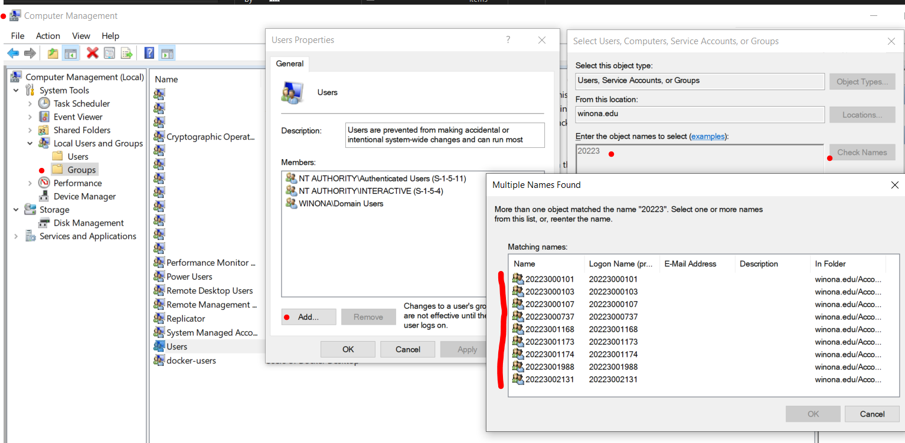

Use the course chatbot and the references provided to answer the following questions and solve the following problems.
Research network design. Consult LinkedIn Learning, Wikipedia- capacity management and the Internet.
(50) 1. Reflect on what you have learned about network technology. Briefly explain the importance of an organization periodically reviewing the network environment.
Research network planning. (50) 2. Briefly state the importance of network planning and design.
Research the steps of creating new users in a Windows network environment. Note: some of your computer settings will be different, because your laptop is part of the WSU domain. Be very careful to not change or delete existing accounts or users.
(50) 3. Reflect on the process of creating a new Windows user. Is it easy to do?:
Research Windows groups. Create a new Windows group. You can work with a partner. Be careful not to change or delete existing users or groups.
After you complete the project, in the Computer Management dialog box double-click 'Users', 'Add', enter '20253', click 'Check Names' and exmaine the list.  Your list will not contain as many results.
(50) 4. Briefly explain what (or who) the groups in the list represent, and their purpose.
Create users and groups in Linux using the CLI. You will do this on a Raspberry Pi in Somsen 301. The Raspbian Operating System is based on the Linux Debian distribution. You can work with a partner. Be very careful not to change or delete existing users or groups.
You are not logged in as root to the Raspberry Pi, instead you are use 'pi' . In Debian Linux you use 'sudo' instead of 'su' to enter superuser mode. Type in 'sudo' at the start of a Terminal window command. Use the chatbot to learn how to create a group 'testgroup1'. In the Terminal window type the command cat /etc/group to produce a list of all the groups. Scroll down to make sure that 'testgroup1' is visible.
cat /etc/group
(50) 5. Use the Snipping Tool to make a screenshot of the Terminal window displaying the list of groups. Make sure to that 'testgroup1' is visible. Save the screenshot as "Ex1" in your ' ' folder. You will be combining screenshots from several exercises at the end of this assignment, just as you did in Formative00-PDF File Creation.
Use the chatbot to research and learn about creating and formatting Windows volumes. You can work with a partner. Do NOT actually create new Volumes, or format any partition on your laptop!
Review all the steps but do not actually carry them out.
(50) 6. Use the Snipping Tool to make a screenshot of the Computer Management Console for your laptop. Save the screenshot as "Ex4" in your ' ' folder. You will be combining screenshots from several exercises at the end of this assignment, just as you did in Formative00-PDF File Creation.
Use the chatbot to research file and folder permissions on a Windows network server. You can work with a partner. You can also attempt this from an off-campus location, as long as you establish a Cisco AnyConnect vpn connection. Make sure to use your WSU laptop.
Use the T: drive, and create the folder 'TestFiles' as a subfolder of your network username folder. Be careful what users or groups you add-instead explore the dialog boxes.
When done, make a screenshot showing the Properties box of the 'TestFiles' dialog box.
(50) 7. Use the Snipping Tool to make a screenshot of the Properties box of your 'TestFiles'. Save the screenshot as "Ex5" in your ' ' folder. You will be combining screenshots from several exercises at the end of this assignment, just as you did in Formative00-PDF File Creation.
Use the chatbot to research and understand file sharing. You can work with a partner.
In this project work with the 'TestFiles' folder that you created on the T: drive in the last exercise.
Bring up the Computer Management Console and investigate its properties and capabilities. Make sure the counters are visible in the window and resize it appropriately.
(50) 8. Use the Snipping Tool to make a screenshot of the Computer Management dialog box showing the Performance Monitor displaying %DiskTime, %InterrupTime and Processor Queue Length. Save the screenshot as "Ex6" in your ' ' folder. You will be combining screenshots from several exercises at the end of this assignment, just as you did in Formative00-PDF File Creation.
Using the following data, use Excel and calculate the payback period. Development cost: $418,040 Operation and maintenance costs for year 0 to year 6, respectively: 0; $15,045; $16,000; $17,000; $18,000; $19,000; $20,000. Discount rate: 6% Benefits (year 0 -year 6): $0; $150,000; $170,000; $190,000; $210,000; $230,000; $250,000
reference: Summative14.xlsx
(100) 9. Use the Snipping Tool to make a screenshot of the your Excel calculations. Save the screenshot as "Ex7Payback" in your ' ' folder. You will be combining screenshots from several exercises at the end of this assignment, just as you did in Formative00-PDF File Creation.
(50) 10. Save your Excel file 'Summative14.xlsx' in your ' ' folder.
Use the attached Excel workbook, Summative14.xlsx A component has a MTBF = 500 hours and a transaction takes 4 seconds. Calculate the reliability of the component.
(100) 12. Use the Snipping Tool to make a screenshot of the your Excel calculations. Save the screenshot as "Ex7Rel" in your ' ' folder. You will be combining screenshots from several exercises at the end of this assignment, just as you did in Formative00-PDF File Creation.
Read the article "All Systems Down" . Use the chatbot to investigate this and similar network incidnets. Then answer the following questions. (50) 13. Briefly summarize what caused the problem with the Beth Israel Deaconess network: (50) 14. Discuss with your classmates what could be done to prevent this type of problem in the future:
There are no Packet Tracer Labs for this chapter.
Use a web browser to verify that you have published your website to https://classes.winona.edu/... Check that your name, StarID, email, class, semester, section and all of your answers are correct and visible. From the menu choose File>Print... and using "Microsoft Print to PDF" save a copy of this assignment as a .pdf file in your ' ' folder.
(50) 15. Save your file 'WebPage.pdf' to the ' ' folder.
Create one .pdf (portable document format) file from the screenshots that you have taken by following these steps.
(50) 16. Save your file 'ScreenShots.pdf' in your ' ' folder.
Use PDFill to merge the WebPage.pdf file with the ScreenShots.pdf file, and save it as 'Summative14.pdf' in your ' ' folder.
(50) 17. Upload your file 'Summative14.pdf' to the D2L 'Summative14' Assignment folder.
Use a browser to view your completed and published website at: https://classes.winona.edu/... Ensure that you have linked this assignment on your home page. Note that your screenshots do not have to be completed to perform this step.